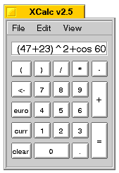
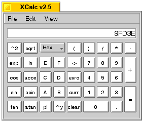
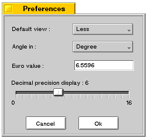

Welcome to XCalc, a useful GUI Calculator for BeOS. This program let you handle very simple expressions, or more complex ones, depending on your needs.
| What can I do with it ? |
- Euro conversion
- Bin/Oct/Dec/Hexa conversions
- Simple or complex expressions (with ( ), ^2, ^y, sqrt, cos, sin, tan, acos, asin, atan, ln, exp, etc.)
And much more :
- Simple or Detailed View
- Configurable
- Use b for binary numbers, o for octal, d for decimal and x for hexa ones.
- When an error occur, put the cursor on the wrong character
- Let you change the expression easily if you make a mistake
- GUI with a numpad like interface
- Cut & Paste with others standard apps (Alt+C, Alt+V)
- Drag & Drop
- Sources are available: you can improve it if you want
| Screen shot |

XCalc - Simple View

XCalc - Detailed View

XCalc - Preferences
| Information |
This software is under GPL License. If you like it, you can give the contribution you want (like e-cards), but this is not required.
The distribution of this software on all kind of media requires the agreement of its author : mougel@netcourrier.com.
For getting information of this version contact with me.
| To do |
- Replicant technology
- Display error messages
- Handle special characters (pi, divide, multiply, etc.)
- Scalable window
- Correct the bug in the display
That's all !